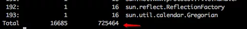

原文连接:https://www.cnblogs.com/pengthrree/p/11855045.html
一、jmap找出占用内存较大的实例
先给个示例代码：
import java.util.List;
import java.util.concurrent.CountDownLatch;
/**
* @Classname OOMTest
* @Description TODO
* @Date 2019/11/14 9:48 AM
* @Author by lixin
*/
public class OOMTest {
public static void main(String[] args) throws InterruptedException {
CountDownLatch latch = new CountDownLatch(1);
int max = 10000;
List<Person> list = new ArrayList<>(max);
for (int j = 0; j < max; j++) {
Person p = new Person();
p.setAge(100);
p.setName("彭阿三");
list.add(p);
}
System.out.println("ready!");
latch.await();
}
public static class Person {
private String name;
private int age;
public String getName() {
return name;
}
public void setName(String name) {
this.name = name;
}
public int getAge() {
return age;
}
public void setAge(int age) {
this.age = age;
}
}
}
List中放了1w个Person对象的实例，先把这段程序跑起来
javac OOMTest.java
java OOMTest
然后再开一个窗口，jps -l 找出该程序的pid
然后执行 jmap -histo:live 7320 （注：如果输出内容太多，只想看排名前10的，可以加 | head -10）
输出结果，会按内存使用量，从大到小依次把对象的实际个数，占用内存数量(字节数)打印出来，最后还会输出汇总信息

以上面的示例来说，OOMTest$Person这个类的实例数为10000个，总共占用240000字节（注：即每个实例24字节），这个程序总占用内存数为725464字节，约：0.69M。
另外还有一些[C,[B这类class name，大概意思为：
[C is a char[]
[S is a short[]
[I is a int[]
[B is a byte[]
[[I is a int[][]
[C对象往往跟String有关，String其内部使用final char[]数组来保存数据的
constMethodKlass/ methodKlass/ constantPoolKlass/ constantPoolCacheKlass/ instanceKlassKlass/ methodDataKlass
与Classloader相关，常驻与Perm区。
二、找出某个java应用打开的句柄数及线程数
ll /proc/{pid}/fd | wc -l 查看打开的句柄数
ll /proc/{pid}/task | wc -l 查看线程数
三、jmap 查看堆内存的各项配置
jmap -heap pid 可以看到类似下面的输出：
using thread-local object allocation.
Parallel GC with 4 thread(s) //当前使用的GC方式(并行GC)
Heap Configuration: //堆内存配置
MinHeapFreeRatio = 0 //对应jvm启动参数-XX:MinHeapFreeRatio设置JVM堆最小空闲比率(java8默认0)
MaxHeapFreeRatio = 100 //对应jvm启动参数-XX:MaxHeapFreeRatio设置JVM堆最大空闲比率
MaxHeapSize = 8388608 (8.0MB) //对应jvm启动参数-XX:MaxHeapSize=设置JVM堆的最大大小(或-Xmx参数)
NewSize = 5242880 (5.0MB) //对应jvm启动参数-XX:NewSize=设置JVM堆的‘新生代’的默认
MaxNewSize = 5242880 (5.0MB) //对应jvm启动参数-XX:MaxNewSize=设置JVM堆的‘新生代’的最大大小
OldSize = 3145728 (3.0MB) //对应jvm启动参数-XX:OldSize=设置JVM堆的‘老生代’的大小
NewRatio = 2 //对应jvm启动参数-XX:NewRatio=:‘新生代’和‘老生代’的大小比率
SurvivorRatio = 8 //对应jvm启动参数-XX:SurvivorRatio=设置年轻代中Eden区与Survivor区的大小比值
MetaspaceSize = 21807104 (20.796875MB)
CompressedClassSpaceSize = 1073741824 (1024.0MB)
MaxMetaspaceSize = 17592186044415 MB
G1HeapRegionSize = 0 (0.0MB)
Heap Usage: //堆内存使用情况
PS Young Generation
Eden Space: //Eden区分布
capacity = 2621440 (2.5MB) //Eden区总容量
used = 2328088 (2.2202377319335938MB) //Eden区已使用
free = 293352 (0.27976226806640625MB) //Eden区剩余容量
88.80950927734375% used
From Space: //其中一个Survivor区的内存分布
capacity = 1572864 (1.5MB)
used = 360448 (0.34375MB)
free = 1212416 (1.15625MB)
22.916666666666668% used
To Space: //另一个Survivor区的内存分布
capacity = 1048576 (1.0MB)
used = 0 (0.0MB)
free = 1048576 (1.0MB)
0.0% used
PS Old Generation //当前的Old区内存分布
capacity = 3145728 (3.0MB)
used = 1458968 (1.3913803100585938MB)
free = 1686760 (1.6086196899414062MB)
46.37934366861979% used
3759 interned Strings occupying 298824 bytes.
注：5-16行是堆内存的主要配置，这些参数都可以通过 java -XX:参数名=参数值 来调整其大小，比如：
java -XX:MinHeapFreeRatio=20 -XX:MaxHeapFreeRatio=80 -Xmx100m -XX:MetaspaceSize=50M -XX:NewRatio=3 将影响MinHeapFreeRatio、MaxHeapFreeRatio、MaxHeapSize、MetaspaceSize、NewRatio的值
注意下NewRatio，这个值指的 老年代(Old Generation): 新生代(Young Generation)的比值，上面设置成3，所以OldSize为75m，而NewSize为25m，参考下图:
注:这是jdk7的示意图，jdk8中Permanent Generation被去掉了，新加入了Metaspace区，但这个区别不影响对 新生代、老生代的理解。
新生代(Young Generation）又可以细分为eden、s0、s1 三大块。
java7与java8的内存变化，大致如上图。
SurvirorRatio这个要难算一点，按Oracle官网的解释：https://docs.oracle.com/cd/E19159-01/819-3681/abeil/index.html ，默认值是8，即：每块survivor：eden区的大小为1:8，换句话说 s0 = s1 = 1 / (1+1+8) = 1/10
注：虽然官网这么解释，但是我实际算了下，好象并不是严格按这个比例来算的，只能大概说是这个分配比例。(结论就是：SurvirorRatio设置越大，eden区就越大)
四、找出占用CPU最高的线程
先来一段演示代码：
import java.util.concurrent.CountDownLatch;
/**
* Created by 菩提树下的杨过 on 05/09/2017.
*/
public class OOMTest {
public static void main(String[] args) throws InterruptedException {
CountDownLatch latch = new CountDownLatch(1);
int max = 100;
for (int i = 0; i < max; i++) {
Thread t = new Thread() {
public void run() {
try {
Thread.sleep(50);
} catch (InterruptedException e) {
Thread.currentThread().interrupt();
}
}
};
t.setName("thread-" + i);
t.start();
}
Thread t = new Thread() {
public void run() {
int i = 0;
while (true) {
i = (i++) / 10;
}
}
};
t.setName("BUSY THREAD");
t.start();
System.out.println("ready");
latch.await();
}
}这里面有100个线程是空转的，另外还有一个线程BUSY THREAD在狂跑CPU。
javac OOMTest.java
java OOMTest
把程序跑起来，jps -l 找出pid，然后 top -Hp pid
可以看到pid 16813这个对应的线程，把CPU快跑满了，达到了98.5%
接下来，将16813转换成16进制 ，即41ad (tips: printf "%x" 16813 ) ，然后
jstack pid | grep '41ad'
我们就把最忙的这个线程BUSY THREAD给找出来了（注：这个技巧再次说明了，给线程取个好名字相当重要!)
tips：如果使用spring-boot的话，直接在浏览器里查看/dump端点，也可以达到类似jstack的效果。
五、jvisualvm 查看运行情况
JDK_HOME/bin下有一个自带的jvisualvm工具，可以图形化的查看GC情况（注：要安装插件)
java.net这个网站已经被oracle关了，所以安装插件这里，有点小麻烦，先到https://visualvm.github.io/pluginscenters.html 这里找到jvisualvm对应的jdk版本号，以jdk8为例，地址就是 https://visualvm.github.io/uc/8u131/updates.xml.gz
然后，把这个地址在Plugins里的Settings里改一下，然后Available Plugin这里，就能看到可用插件了，选择GC插件并安装。

可以来一段代码，然后用jvisualvm来看下GC情况
import java.util.ArrayList;
import java.util.List;
/**
* Created by 彭阿三 on 05/09/2019.
*/
public class OOMTest {
public static void main(String[] args) throws InterruptedException {
List<String> list = new ArrayList<>();
while (true) {
Thread.sleep(10);
list.add("菩提树下的杨过" + System.currentTimeMillis());
}
}
}
可以直观的看到Old区，Eden区，S0，S1以及Metaspace区的内存变化情况，以上图为例：Old Gen区占用内存一直在增加，表示可能有内存一直未被释放，值得关注。
此外，还可以看到占用内存最多的类（即：本文最开始提到的）
还可以更进一步点击看详情，比如下面的图，就能发现Metaspace已经OOM了
也可以查看哪些线程最忙
六、使用jstat 查看GC
虽然jvisualvm很好用，但是通常服务器是用终端连上的，无法运行图形化界面，而且也并非所有应用都开启了jmx，所以掌握jstat以命令行方式查看GC情况也是蛮重要的
用法：jstat -gc pid 采样间隔毫秒数，比如: jstat -gc 8544 5000，将每隔5s采样一次pid为8544的gc情况
以上图为例：红剪头的地方，S0区的已用量降到0，而S1区的已用量上涨，即说明发生了Young GC，对象从S0区被迁移到了S1区。
title栏的含义如下：
S0C - 新生代中第1块survivor 的容量(Survivor 0 Capacity)，KB单位
S1C - 新生代中第2块survivor 的容量(Survivor 1 Capacity)，KB单位
S0U - 新生代中第1块survivor 已使用空间数(Survivor 0 Used)，KB单位
S1U - 新生代中第2块survivor 已使用空间数(Survivor 0 Used)，KB单位
EC - Eden区的容量(KB)
EU - Eden区已使用(KB数)
OC - Old区的容量(KB)
OU - Old区已使用(KB数)
MC - Metaspace容量(KB)
MU - Metaspace已使用KB
CCSC - 压缩类的内存容量(KB)
CCSU - 压缩类的已用容量(KB)
YGC - (从应用启动算起，到采样时的) Young GC次数
YGCT - (从应用启动算起，到采样时的) Young GC所用时间(秒)
FGC - (从应用启动算起，到采样时的) Full GC次数
FGCT - (从应用启动算起，到采样时的) Full GC所用时间(秒)
GCT - (从应用启动算起，到采样时的) Yong GC + Full GC的总时间
值得一提的是G1垃圾回收器，在大堆(>4G)时，用G1可能效果会更好，G1的开启方法：
-XX:+UseG1GC -XX:MaxGCPauseMillis=200
开启后，再使用jmap -heap pid
可以看到从默认的并发GC变成了G1.
jstat -gc pid 5000
看到S0全是0，这也是G1的一个特点，将新生代与老年代的划分取消掉了，而是用region的新概念，把整个堆内存划分成一个个region，详情见本文最后的参考文章。
七、导出整个jvm的dump（慎重使用，可能导致应用停顿）
jmap -dump:format=b,file=文件名 [pid]
最后这个算是放大招了，把整个jvm都导出来分析，通常是其它手段都搞不定的时候，才找运维去搞这个，导出的文件体积大，而且导出时会使应用停顿。把这个文件弄到本地后，可以用eclipse的一个插件MAT来分析，下载地址：http://www.eclipse.org/mat/downloads.php
参考文章：Java GC系列 http://www.importnew.com/13504.html深入理解 Java G1 垃圾收集器 http://blog.jobbole.com/109170/jstat Oracle官方介绍 http://docs.oracle.com/javase/8/docs/technotes/tools/unix/jstat.html